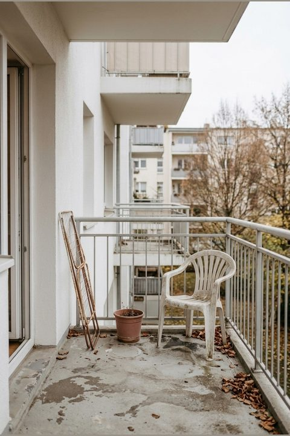
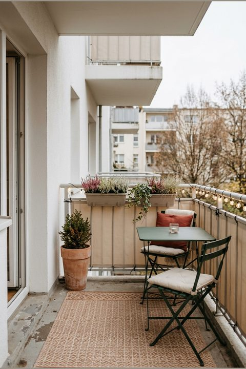

Kleiner Balkon vorher/nachher: Makeover in 8 Schritten


Ein typischer Mietbalkon: 1,2 m tief, grauer Beton, ein Plastikstuhl. Mit acht Schritten wird daraus eine Ecke, in der man gerne sitzt – alles ohne Bohren und an einem Wochenende machbar. Die Spar-Version kostet unter 150 €.
Zur Einkaufsliste & den Kosten ↓
Die 8 Schritte
1. Ausmisten
Wäscheständer, leere Töpfe und alles, was „nur kurz“ draußen steht, kommt weg. Erst wenn der Balkon leer ist, sieht man, wie viel Platz wirklich da ist. Einmal den Boden schrubben – das kostet nichts und macht schon viel aus.
0 €
2. Boden: ein Outdoor-Teppich
Der größte Effekt pro Euro. Ein Teppich aus Kunststoffgewebe (z. B. 120 × 180 cm) deckt den Beton ab und macht den Balkon optisch zum Zimmer. Warme Farben wie Terrakotta oder Beige wirken gemütlicher als Grau.
ca. 20–35 €
3. Sichtschutz am Geländer
Eine Stoffbespannung in Sand oder Beige, mit Kabelbindern innen am Geländer befestigt. Sie verdeckt Blicke von unten und macht den Balkon ruhiger. Welche Arten es gibt, steht im Sichtschutz-Vergleich.
ca. 15–25 €
4. Klappmöbel statt Plastikstuhl
Ein Bistroset aus Metall (kleiner Tisch, zwei Klappstühle) passt auch auf schmale Balkone und lässt sich im Winter platzsparend verstauen. Dunkelgrün oder Anthrazit sehen hochwertiger aus als Weiß.
ca. 50–90 €
5. Zwei Balkonkästen am Geländer
Kästen mit Halterung zum Einhängen brauchen keinen Platz auf dem Boden. Jetzt im Herbst und Winter: Heide in Rosa und Weiß, kleine Gräser und Efeu, der über den Rand hängt. Im Frühling einfach umpflanzen.
ca. 35–60 € (Kästen, Pflanzen, Erde)
6. Ein großer Topf in der Ecke
Ein großer Terrakottatopf mit einer kleinen Konifere füllt die leere Ecke neben der Tür und gibt dem Balkon Höhe. Lieber ein großer Topf als fünf kleine – das wirkt aufgeräumter.
ca. 25–50 €
7. Kissen in zwei Farben
Zwei Sitzkissen in Creme und zwei Kissen in Rostrot: Die Farben greifen den Teppich auf. Abends in eine Box oder nach drinnen, damit sie nicht feucht werden.
ca. 20–40 €
8. Eine Lichterkette
Eine warmweiße Lichterkette am oberen Geländer. Tagsüber kaum zu sehen, abends macht sie den Unterschied. Mehr Ideen: Lichterketten auf dem Balkon.
ca. 10–20 €
Einkaufsliste
| Was | Menge | ca. Preis |
|---|---|---|
| Outdoor-Teppich, ca. 120 × 180 cm | 1 | 20–35 € |
| Stoff-Sichtschutz, 3 m, mit Kabelbindern | 1 | 15–25 € |
| Bistroset Metall, klappbar (Tisch + 2 Stühle) | 1 | 50–90 € |
| Balkonkästen mit Geländerhalterung | 2 | 16–30 € |
| Heide, Gräser, Efeu | 8 Töpfe | 15–25 € |
| Blumenerde, 20 l | 1 | 4–6 € |
| Großer Terrakottatopf + Zwergkonifere | 1 | 25–50 € |
| Sitzkissen + Kissen | 4 | 20–40 € |
| Lichterkette außen, warmweiß | 1 | 10–20 € |
Richtwerte für Deutschland, Stand November 2026. Die Preise schwanken je nach Händler und Saison.
Was kostet das Makeover?
Spar-Version – unter 150 €: Teppich, Bistroset, zwei Balkonkästen mit Pflanzen, Lichterkette (ca. 115–200 €, mit günstigen Modellen unter 150 €).
Komplett wie auf dem Bild – ca. 175–320 €: alles aus der Einkaufsliste.
Tipp: In dieser Reihenfolge kaufen: Teppich → Möbel → Pflanzen → Rest. Die ersten beiden machen 70 % des Vorher/Nachher-Effekts.
Häufige Fragen
Geht das auch ohne Bohren?
Ja, alles auf dieser Seite: Der Sichtschutz hält mit Kabelbindern, die Kästen hängen in Geländerhalterungen, die Lichterkette ist mit Kabelbindern fixiert.
Was mache ich mit den Möbeln im Winter?
Metall-Klappmöbel können draußen bleiben, wenn sie zusammengeklappt an der Wand stehen. Teppich und Kissen lieber trocken lagern, damit sie nicht schimmeln.